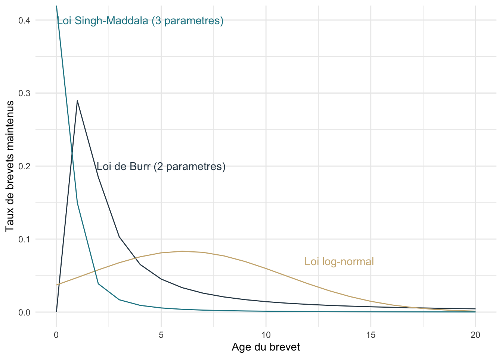
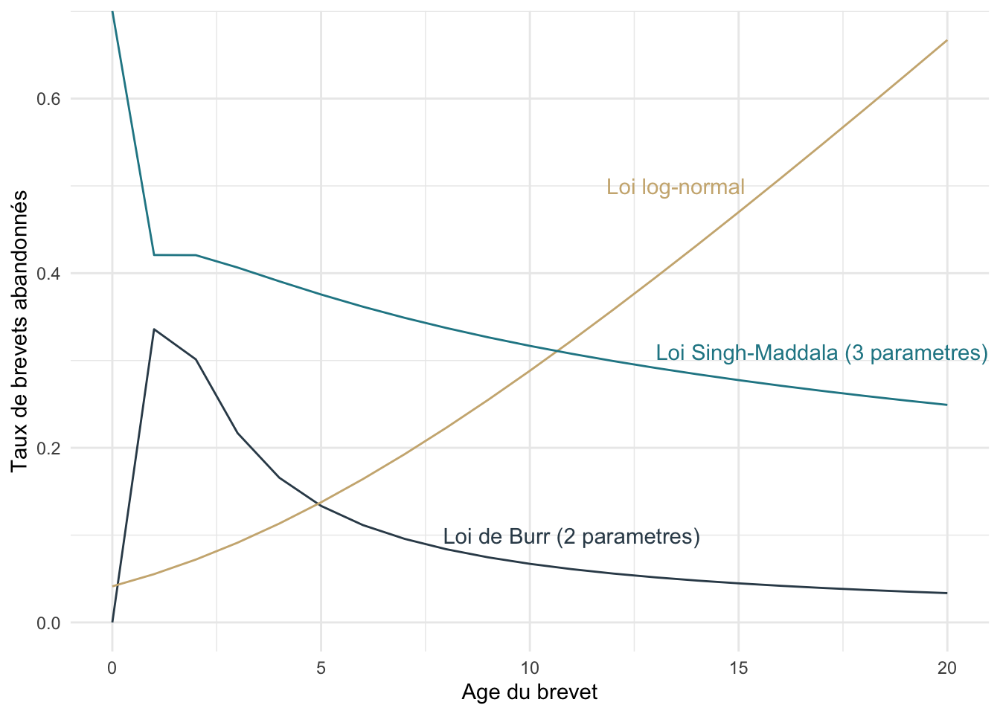
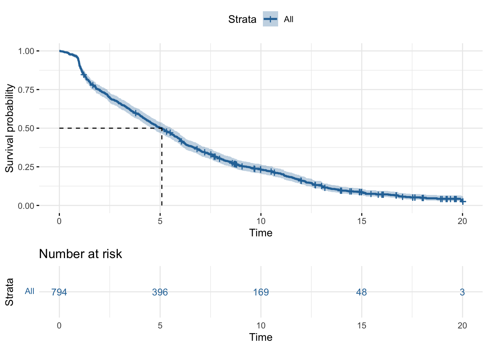
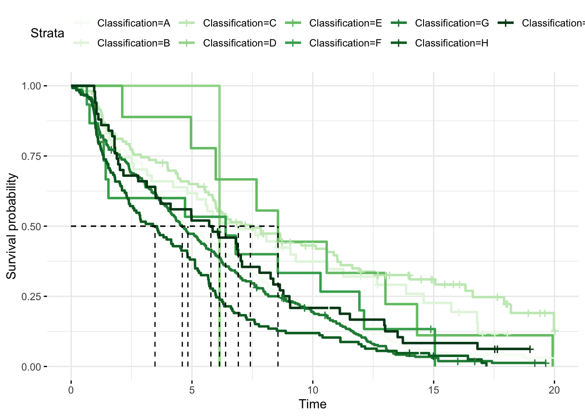
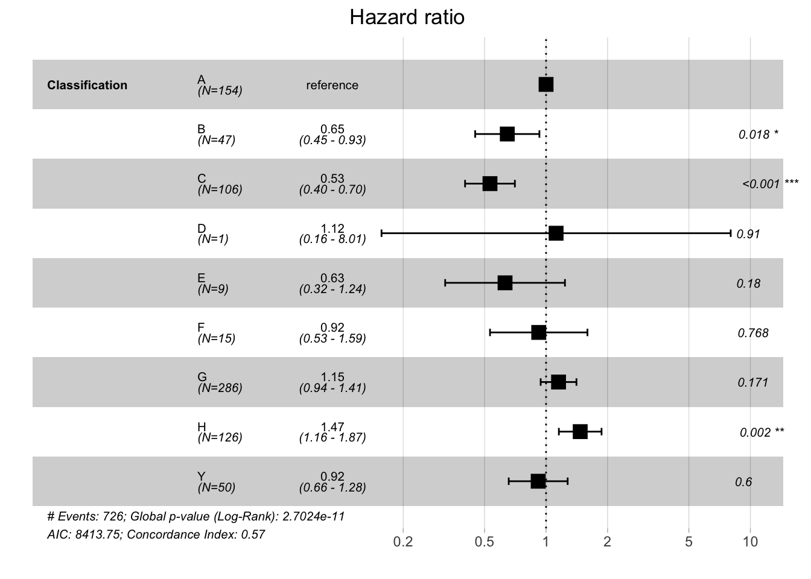
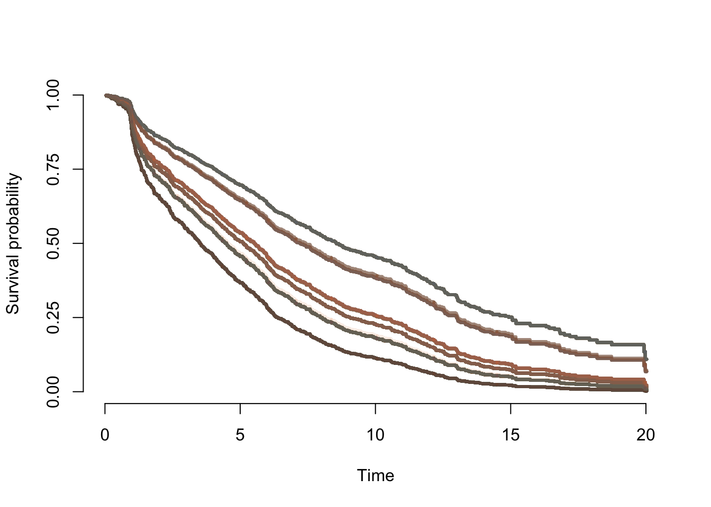

Chapter 4 Application des modèles sur une nouveau jeu de données
Notre jeu de données contient 796 observations correspondant à des brevets scrapés sur Google Patent. Il contient aussi 28 variables dont les plus utiles à notre analyse sont :
Num_pub :numéros de publication du brevetPays pub :pays d’origine de la publication du brevetNb pays :l’étendue du brevet (dans combien de pays le brevet est effectif)Date prior :date de dépôt du brevetDate expi :date de la dernière actualisation du brevet si le brevet est actif et date d’expiration si le brevet est expiréStatut :indique le statut du brevet (expiré ou actif)Entreprise :nom de l’entreprise ayant déposé le brevetClassification :domaine concerné par le brevet- A : NÉCESSITÉS COURANTES DE LA VIE
- B : TECHNIQUES INDUSTRIELLES; TRANSPORTS
- C : CHIMIE; MÉTALLURGIE
- D : TEXTILES; PAPIER
- E : CONSTRUCTIONS FIXES
- F : MÉCANIQUE; ÉCLAIRAGE; CHAUFFAGE; ARMEMENT; SAUTAGE
- G : PHYSIQUE
- H : ÉLECTRICITÉ
- Y : Regroupe les nouveaux développements technologiques; rassemble les technologies qui participent de plusieurs sections issues de diverses sections de la CIB
4.1 Statistiques descriptives
- Répartition des brevets selon leur statut
| Statut | Effectifs | Proportions |
|---|---|---|
| Status Active | 726 | 91.2 |
| Status Expire | 70 | 8.8 |
- Répartition des brevets selon leur domaine
| Classification | Effectifs | Proportions |
|---|---|---|
| G | 286 | 35.9 |
| A | 155 | 19.5 |
| H | 126 | 15.8 |
| C | 106 | 13.3 |
| Y | 51 | 6.4 |
| B | 47 | 5.9 |
| F | 15 | 1.9 |
| E | 9 | 1.1 |
| D | 1 | 0.1 |
- Répartition des brevets selon leur pays
| Pays.pub | Effectifs | Proportions |
|---|---|---|
| US | 642 | 80.7 |
| EP | 93 | 11.7 |
| AU | 29 | 3.6 |
| FR | 29 | 3.6 |
| CA | 3 | 0.4 |
- Répartition des brevets selon leur date de dépôts
- Détermination des différents cas
Identification des différents cas de la BDD:
- cas 1 : brevets censurés à droite déposés avant 2010
- cas 2 : brevets censurés à droite déposés après 2010
- cas 3 : brevets déposés et abandonnés entre 2010 et 2020
- cas 4 : brevets déposés avant 2010 et abandonnés avant 2020 (pas à expiration)
- cas 5 : brevets arrivés à expiration
| cas_brevet | effectif_brevet |
|---|---|
| 1 | 354 |
| 2 | 372 |
| 3 | 5 |
| 4 | 60 |
| 5 | 3 |
- Répartition des durées de vie des brevets
4.2 Estimation paramétrique
4.2.1 Loi Singh-Madala
- Construction de la fonction de vraisemblance à la main
Dans cette première estimation, nous appliquerons la méthode de l’estimation par le maximum de vraisemblance sur une fonction de vraisemblance construite à la main. Pour rappel, elle permet de réaliser une estimation sur-mesure c’est-à-dire qu’elle prend en compte les différentes conditions spécifiques de la base de données comme les censures.
L’application de cette méthode nous renvoie comme résultat le tableau suivant :
## --------------------------------------------
## Maximum Likelihood estimation
## Newton-Raphson maximisation, 2 iterations
## Return code 3: Last step could not find a value above the current.
## Boundary of parameter space?
## Consider switching to a more robust optimisation method temporarily.
## Log-Likelihood: 720024260
## 3 free parameters
## Estimates:
## Estimate Std. error t value Pr(> t)
## a1 1.317e+01 1.254e-07 105048149 <2e-16 ***
## a2 3.252e-01 NA NA NA
## a3 6.511e+00 1.264e-07 51492262 <2e-16 ***
## ---
## Signif. codes: 0 '***' 0.001 '**' 0.01 '*' 0.05 '.' 0.1 ' ' 1
## --------------------------------------------Nous constatons que notre estimation produit des NAs mais en revanche, les deux coefficients (a1 et a3) sont significatifs au seuil des 0.1 %.
- Estimation avec la loi de Burr (loi de Singh-Maddala ou loi log-logistisque généralisée) avec le package
actuar
Une seconde approche pour l’estimation avec la méthode de Singh-Maddala est l’utilisation du package actuar qui a une commande de fonction pour la loi de Burr mais avec deux paramètres.
Cette méthode reste tout de même paramétrique car nous réalisons une approximation par itération des coefficients recherchés comme dans la méthode précédente.
Pour cette modélisation, nous obtenons les résultats suivants :
## --------------------------------------------
## Maximum Likelihood estimation
## Newton-Raphson maximisation, 6 iterations
## Return code 8: successive function values within relative tolerance limit (reltol)
## Log-Likelihood: -2410.678
## 2 free parameters
## Estimates:
## Estimate Std. error t value Pr(> t)
## a 0.2150 0.0165 13.03 <2e-16 ***
## k 3.1248 0.2212 14.12 <2e-16 ***
## ---
## Signif. codes: 0 '***' 0.001 '**' 0.01 '*' 0.05 '.' 0.1 ' ' 1
## --------------------------------------------Nous constatons que les deux coefficients estimés sont significatifs au seuil 0.1 % et un niveau de log-vraisemblance de -2410.678 ce qui reste relativement élevé en valeur absolue.
4.2.2 Estimation avec la loi log-normal
Nous pouvons aussi réaliser une estimation avec une approximation des paramètres \(\mu\) et \(\sigma\) par itération pour la loi log-normal. Pour cette étape, nous avons pour résultats le tableau suivant :
## --------------------------------------------
## Maximum Likelihood estimation
## Newton-Raphson maximisation, 12 iterations
## Return code 2: successive function values within tolerance limit (tol)
## Log-Likelihood: -2370.267
## 2 free parameters
## Estimates:
## Estimate Std. error t value Pr(> t)
## mu 6.0897 0.1701 35.80 <2e-16 ***
## sd 4.7888 0.1203 39.81 <2e-16 ***
## ---
## Signif. codes: 0 '***' 0.001 '**' 0.01 '*' 0.05 '.' 0.1 ' ' 1
## --------------------------------------------Et pour la dernière méthode d’estimation paramétrique, nous constatons que la loi log-normale possède un niveau de log-vraisemblance de 2370.267 en valeur absolue malgré que les coefficients estimés soint significatifs au seuil de 0.1 %.
4.2.3 Représentations graphiques des différentes fonctions
Dans ce premier graphique, sont représentées les estimations paramétriques de la fonction de survie de notre base de données.
 Figure : Estimations de la fonction de survie selon plusieurs méthodes
Nous remarquons ainsi que l’estimation la plus ajustée est celle avec la loi de Burr avec deux paramètres à estimer.
- Représentation des taux de hasard
 Figure : Estimations de la fonction de hasard selon plusieurs méthodes
Nous pouvons constater une deuxième fois une cohérence de l’estimation de la fonction de hasard par rapport à la précédente estimation des fonctions de survie.
4.3 Estimation non-paramétrique : méthode de Kaplan-Meier
- L’estimation est réalisée par rapport à la constante.
## Call: survfit(formula = surv ~ 1, data = df, type = c("kaplan-meier"))
##
## n events median 0.95LCL 0.95UCL
## 794.00 726.00 5.08 4.56 5.55
- L’estimation est réalisée par rapport à la variable
Classification.
## Call: survfit(formula = surv ~ Classification, data = df, type = c("kaplan-meier"))
##
## n events median 0.95LCL 0.95UCL
## Classification=A 154 145 4.83 4.19 6.10
## Classification=B 47 37 6.92 4.81 11.26
## Classification=C 106 75 7.42 5.96 11.01
## Classification=D 1 1 6.14 NA NA
## Classification=E 9 9 8.56 5.98 NA
## Classification=F 15 14 6.39 1.43 12.12
## Classification=G 286 275 4.60 4.03 5.38
## Classification=H 126 124 3.47 2.39 4.81
## Classification=Y 50 46 5.78 3.48 7.79
4.4 Estimation semi-paramétriques : Modèle de Cox
- Résultat de l’estimation des coefficients de la fonction de hazard :
## Call:
## coxph(formula = surv ~ Classification, data = df, x = TRUE, y = TRUE)
##
## n= 794, number of events= 726
##
## coef exp(coef) se(coef) z Pr(>|z|)
## ClassificationB -0.43711 0.64590 0.18470 -2.367 0.01795 *
## ClassificationC -0.63225 0.53140 0.14320 -4.415 1.01e-05 ***
## ClassificationD 0.11309 1.11973 1.00393 0.113 0.91031
## ClassificationE -0.46225 0.62986 0.34438 -1.342 0.17951
## ClassificationF -0.08279 0.92054 0.28014 -0.296 0.76758
## ClassificationG 0.14069 1.15107 0.10284 1.368 0.17130
## ClassificationH 0.38475 1.46925 0.12272 3.135 0.00172 **
## ClassificationY -0.08878 0.91505 0.16942 -0.524 0.60025
## ---
## Signif. codes: 0 '***' 0.001 '**' 0.01 '*' 0.05 '.' 0.1 ' ' 1
##
## exp(coef) exp(-coef) lower .95 upper .95
## ClassificationB 0.6459 1.5482 0.4497 0.9276
## ClassificationC 0.5314 1.8818 0.4014 0.7036
## ClassificationD 1.1197 0.8931 0.1565 8.0106
## ClassificationE 0.6299 1.5876 0.3207 1.2370
## ClassificationF 0.9205 1.0863 0.5316 1.5940
## ClassificationG 1.1511 0.8688 0.9409 1.4081
## ClassificationH 1.4693 0.6806 1.1552 1.8688
## ClassificationY 0.9150 1.0928 0.6565 1.2754
##
## Concordance= 0.573 (se = 0.012 )
## Likelihood ratio test= 66.27 on 8 df, p=3e-11
## Wald test = 60.62 on 8 df, p=4e-10
## Score (logrank) test = 63.14 on 8 df, p=1e-10- Résultat des Odd Ratios :

- Représentation graphique des fonctions de survie estimées :

- Vérification du modèle :
## chisq df p
## Classification 12.8 8 0.12
## GLOBAL 12.8 8 0.12Comme la p-value de ce test est relativement élevée, alors le modèle ne peut être maintenu.
4.5 Conclusion de l’application
L’application des différentes méthodes d’estimation de la fonction de survie selon des modèles prenant en compte la censure existante nous permet d’obtenir un nouvel aperçu des estimations réalisables sur d’autres données temporelles.
Nous constatons que le modèle permettant une estimation plus juste de la fonction de survie empirique de la base de données sur les brevets est la méthode paramétrique utilisant le modèle de Burr avec l’estimation de deux paramètres. Cela semble donc indiquer que la méthode la plus efficace sur le jeu de données initial n’est pas forcément généralisable à d’autres données comme on a pu le voir sur ce jeu de données scrapées sur Google Patent. Cependant, la loi de Burr (loi singhmaddala à deux paramètres), semble là aussi être la loi la plus adaptée.